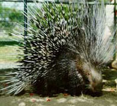
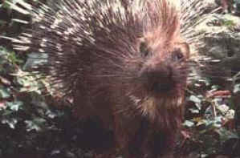

PORCOSPINO (PORCUPINE)

| Climate/Terrain | Foreste Temperate |
| Frequency | Uncommon |
| Organization | Solitario |
| Activity Cycle | Night |
| Diet | Onnivoro |
| Intelligence | Semi (2) |
| Treasure | Nessuno |
| Alignment | Neutral |
| No. Appearing | 1d3 |
| Armor Class | 6 |
| Movement | 12 |
| Hit Dice | 1/2 + 1 |
| Thac0 | 20 |
| No. of Attacks | 1 lancio di aculei |
| Damage / Attacks | Vedi sotto |
| Special Attacks | Nessuno |
| Special Defenses | Vedi sotto |
| Magic Resistance | Nessuna |
| Size | Small |
| Morale | Steady (12) |
| XP value | 15 |
Descrizione
Grosso roditore lungo 70 cm, corpo goffo e massiccio con testa grossa, occhi piccoli, mobilissimi ma con capacità visiva molto ridotta. Piedi provvisti di 5 dita terminanti con forti unghioni. Mantello scuro tendente al nero, sul capo e sul collo sono presenti lunghe setole flessibili bianco nere, che formano una criniera erettile. Il dorso è ricoperto di lunghi aculei corneificati rigidi e appuntiti lunghi fino a 15 cm. Gli aculei, molto appuntiti, hanno parecchie punte e sono attaccate alla pelle e si drizzano attivati dai muscoli appunto sottopelle.
Combat
In caso di pericolo l'istrice si pone in una posizione difensiva arretrando combattendo fino ad un luogo sicuro. Quando si mette in questa posizione e viene attaccato in corpo a corpo vi sono alcune possibilità su un dado da 6 (1-3 se attaccato con armi naturali, 1-2 se con armi, 1 se con polearms) che l'attaccante si ferisca con gli aculei per 1d2 danni (tale tiro va ripetuto ad ogni attacco). Inoltre vi sono alcune possibilità ogni round 1-3 su 10 che stando in questa posizione difensiva il porcospino lanci alcuni aculei ad una creatura che si trovi entro 3 metri. La vittima deve superare un TS contro paralisi (se tira 1 vi è un critico) od essere colpita da 1d4 aculei che provocano 1 danno da punta l'uno.
Habitat/Society
L’istrice, nonostante l’aspetto “ispido”, è un animale estremamente pacifico e tranquillo, che cerca continuamente di nascondersi soprattutto nelle ore diurne. Quando è disturbato si gonfia a tal punto da raddoppiare le dimensioni e rizza la principale arma di difesa, ossia gli affilatissimi aculei, ed inizia a ringhiare e a soffiare. L’istrice in pericolo o minacciato inizia anche a muoversi e a lanciare gli aculei sino a qualche metro di distanza. Anche nei momenti più difficili l’istrice non morde, ma si avvolge su sé stesso, attendendo che il pericolo passi. Questo Mammifero ha abitudini notturne e vive in piccoli gruppi. Durante il giorno il nostro amico si nasconde in tane, scavate grazie alle unghie delle zampe anteriori, oppure in cavità naturali. Questo Roditore si nutre di tuberi, di bulbi, di cortecce, di frutti e, con meno frequenza, di insetti.
Ecology
Un istrice morto può essere venduto per 1,5 g.p. (la sua carne è commestibile e gli aculei sono trasformati in aghi per usi medici e tessili).
